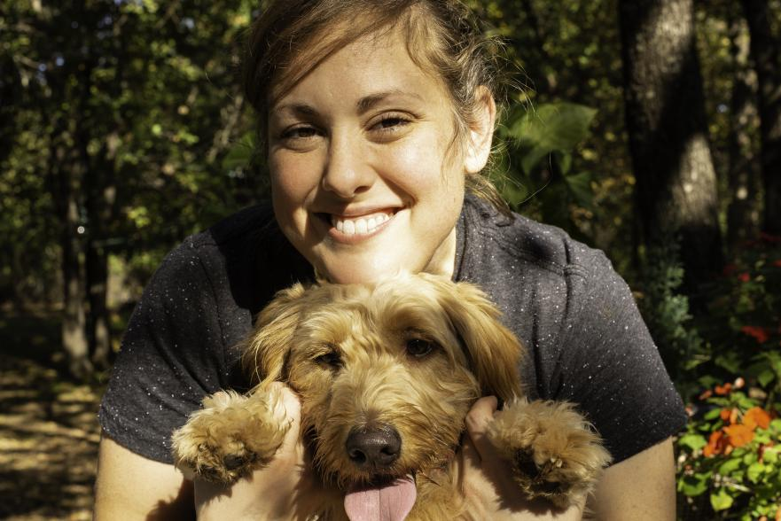

My current goal is to transition into the tech space after a 15-year social work career.
Making the switch from social work to programming may seem like a big leap, but learning to code has allowed me to combine my love of helping people discover solutions to their own problems with my passion for solving puzzles.
When I'm not coding in Python or JavaScript, I love playing the piano, quoting movies, cooking anything, hanging out at the lake, and having fun with my awesome wife, Mel, and puppy dog, Max. Mel and I are avid Star Trek geeks, Houston Astros baseball fans, and fantasy novel junkies.
Resume